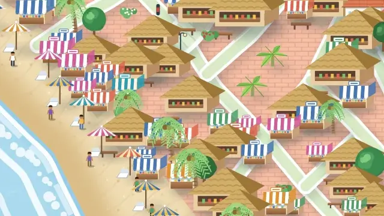

Sedang dikembangkan · rilis 6 Desember 2026
Peta Interaktif Pantai Ciantir
Panduan wisata digital untuk menjelajah kawasan Pantai Ciantir, Desa Sawarna: temukan kuliner dan UMKM, fasilitas, spot wisata, dan info keselamatan langsung dari HP.
An interactive map of Ciantir Beach, Sawarna. Coming December 2026.

Yang akan tersedia
-
Peta ilustrasi kawasan
Ilustrasi detail sesuai kondisi asli, bisa diputar ke 8 arah pandang.
-
Kuliner, UMKM & fasilitas
Info tempat, petunjuk arah, dan hubungi UMKM lewat WhatsApp.
-
Info keselamatan
Arti bendera pantai, jalur evakuasi, dan nomor darurat.
-
Cukup pindai QR
Langsung terbuka di browser HP, tanpa unduh aplikasi. Bahasa Indonesia dan Inggris.
- Lokasi
- Pantai Ciantir, Desa Sawarna, Kec. Bayah, Lebak, Banten
- Program
- KKN 2026 · Divisi Informatika
- Target rilis
- 6 Desember 2026